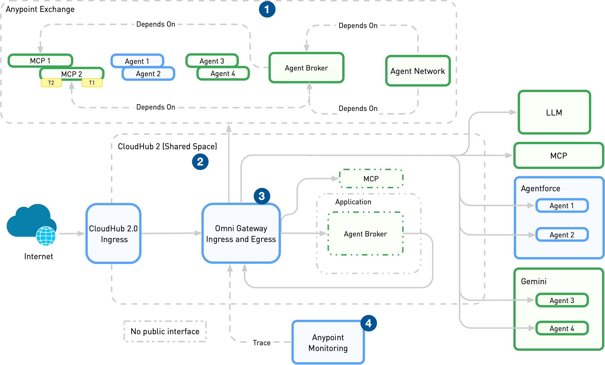

1. Learning outcomes
1.1 Interoperability and deployment decisions
- Explain the role and boundaries of the Agent2Agent protocol.
- Distinguish Agent Cards, messages, tasks, parts, and artifacts.
- Expose and consume an A2A-compatible agent with ADK Python.
- Compare local ASGI hosting, container platforms, Google Agent Runtime, and an enterprise agent network.
2. Topics
2.1 Contract, implementation, operations
The module moves from the protocol contract to an executable ADK server/client pair, then separates application behavior from hosting, security, scaling, governance, and observability concerns.
3. Agent2Agent protocol foundations
3.1 Why A2A exists
Agent2Agent (A2A) is an open standard for communication and collaboration between agentic applications. It allows an agent built with one framework or operated by one organization to delegate work to another agent without learning that agent's private prompt, memory, tools, or implementation. The remote agent remains an opaque service with a declared public contract.
A2A is a communication layer rather than an agent framework. ADK, LangGraph, CrewAI, Semantic Kernel, or custom code can implement the reasoning system behind an A2A endpoint. The protocol standardizes the boundary between those systems.
3.2 A2A and MCP solve different problems
MCP connects an agent to tools, APIs, and data resources. A2A connects one autonomous agentic application to another. A remote A2A agent may internally use MCP servers, but the calling agent delegates a goal and receives an agent result rather than invoking the remote tools directly. The two protocols are therefore complementary.
3.3 Actors and discoverable contracts
An A2A interaction has a user, an A2A client acting for that user, and an A2A server exposing the remote agent. Discovery begins with an Agent Card: a JSON document that declares identity, endpoint, protocol capabilities, input and output modes, skills, and authentication requirements. A client can use a well-known URL, a curated registry, or direct private configuration to locate a card.
3.4 Messages, tasks, parts, and artifacts
A Message represents one communication turn and contains one or more Parts. A part can carry text, structured data, inline bytes, or a referenced file. An Artifact is a concrete task output such as a report, image, or structured dataset. A quick stateless interaction can return a message; trackable or long-running work is represented as a Task with its own identifier and lifecycle.
Tasks can move through working, input-required, authentication-required, completed, canceled, rejected, or failed states. A contextId groups related messages and tasks. Once a task reaches a terminal state it is immutable; a refinement creates a new task in the same context and can reference the earlier task or artifact.
3.5 Interaction and security modes
A2A uses HTTP(S) and supports request/response, Server-Sent Events for streaming updates, and push notifications for long-running work. Authentication schemes are advertised in the Agent Card, while credentials travel through standard HTTP mechanisms rather than inside prompts or task content. Production design must still define authorization, tenant isolation, secret handling, rate limits, input validation, and audit correlation.
Reference: A2A Protocol documentation.
4. Exposing an A2A server with ADK Python
4.1 Wrap an existing ADK agent
ADK can expose an existing root_agent with to_a2a(). The helper creates an A2A executor that bridges protocol requests to the ADK runner, request handling and in-memory task services, a Starlette application, and an Agent Card. Uvicorn serves the resulting ASGI application.
The A2A protocol and SDK are not experimental, but the current ADK Python integration for to_a2a(), A2aAgentExecutor, and RemoteA2aAgent is explicitly marked experimental. Pin the tested ADK version and review release notes before production upgrades.
Protocol compatibility must be checked independently from package installation. The validated ADK 1.39.1 environment with a2a-sdk 0.3.26 generated a card advertising A2A protocol version 0.3.0. Client, server, SDK, and specification versions must be aligned deliberately when either endpoint is upgraded.
from google.adk.a2a.utils.agent_to_a2a import to_a2a
a2a_app = to_a2a(
root_agent,
host="127.0.0.1",
port=8001,
protocol="http",
)The host, protocol, and port are used in the URL advertised by the generated card; they must describe the address clients can actually reach. to_a2a() does not bind the network port by itself, so its configuration must match the Uvicorn command.
4.2 Agent Card and server responsibilities
ADK can generate the card from the agent metadata or accept an explicit AgentCard object or JSON file. Automatic generation is convenient for the first integration; an explicit card gives stronger control over stable skills, authentication declarations, supported modes, versioning, and public service URLs.
The default helper uses in-memory session, task, artifact, credential, and push-notification services. These are appropriate for a local exercise but not automatically durable across restarts or replicas. Production hosting must supply persistent services where task recovery and horizontal scaling require them.
4.3 Local server command
uvicorn ch13.a2a_server.agent:a2a_app \
--host 127.0.0.1 --port 8001
curl http://127.0.0.1:8001/.well-known/agent-card.jsonReference: ADK A2A Quickstart: Exposing an agent with Python.
5. Consuming an A2A agent with ADK Python
5.1 Discover the remote agent
RemoteA2aAgent represents the remote A2A service inside an ADK application. It receives a local name and an Agent Card supplied as an object, local file, or URL. The client uses the card to understand where and how to call the server while the remote implementation remains hidden.
from google.adk.agents.remote_a2a_agent import RemoteA2aAgent
shipping_specialist = RemoteA2aAgent(
name="shipping_specialist",
description="Remote parcel-estimation specialist.",
agent_card="http://127.0.0.1:8001/.well-known/agent-card.json",
use_legacy=False,
)5.2 Delegate through a client agent
The remote agent can be placed in the sub_agents collection of a local ADK coordinator. The coordinator decides when to delegate; ADK translates its native events into A2A requests and translates remote messages, task states, and artifacts back into ADK events. The boundary should preserve identifiers and errors so a trace can follow one user request across both processes.
A production client should not trust discovery metadata blindly. It must validate the card source, require HTTPS, apply authentication, set connection and task timeouts, constrain retries, and decide how to handle input-required, authentication-required, failed, or canceled remote tasks.
5.3 Chapter 13 implementation
The building-llm-applications/ch13 exercise implements both roles. A shipping specialist owns a deterministic estimation tool and is exposed with to_a2a(); a separate client discovers it from the generated card and delegates requests with RemoteA2aAgent. Both processes use local Ollama with gemma4:e4b by default.
Reference: ADK A2A Quickstart: Consuming an agent with Python.
6. Deployment modes
6.1 Deploy the protocol endpoint, not only the model
An A2A deployment includes an externally reachable HTTPS endpoint, a correct Agent Card, application dependencies, model and tool connectivity, state services, authentication, authorization, logs, metrics, traces, and a lifecycle for versions and rollback. Moving the same ADK object to a remote process is only one part of production readiness.
6.2 Google Agent Runtime: managed deployment
Gemini Enterprise Agent Runtime is a managed environment for deploying, operating, and scaling agentic applications. It abstracts the underlying infrastructure, integrates ADK deployment, and provides operational capabilities around security, sessions, monitoring, and lifecycle management. The API retains the resource name ReasoningEngine for backward compatibility.
The standard lifecycle is: configure a Google Cloud project and SDK, develop and test the agent, stage and deploy it, invoke the remote resource, observe and manage it, and delete it when no longer required. Agent Runtime accepts higher-level framework integrations and can also deploy container images or source with a Dockerfile when the runtime contract is satisfied.
6.3 Agent Runtime notebook workflow
The official Building and Deploying an Agent with Agent Runtime notebook provides a guided environment for project initialization, staging dependencies, deployment, remote queries, inspection, and cleanup. Treat the notebook as an operational lab: resource names, regions, IAM permissions, staging buckets, deployed identifiers, and deletion steps are part of the result.
6.4 Container and cluster deployment
The to_a2a() output is a Starlette ASGI application and can be packaged in a container. Cloud Run is suitable for a stateless HTTPS service with managed scaling; GKE offers more control over networking, sidecars, scheduling, and platform integration; another Kubernetes or VM environment can host the same contract when the team owns the operational stack. In every case, the public URL in the Agent Card must match the deployed route and authentication boundary.
6.5 Chapter 13 Docker example
The Chapter 13 deployment example packages the ADK shipping specialist and its A2A endpoint as a non-root Docker container. The Dockerfile installs the pinned Python dependencies, exposes port 8001, starts the Starlette application with Uvicorn, and checks the generated Agent Card as its container health probe.
The compose.yaml builds the image, publishes the A2A port, and connects the container to Ollama running on the host through host.docker.internal. The model tag remains configurable, so the course baseline can be selected before startup:
export OLLAMA_MODEL=gemma4:e4b
docker compose -f ch13/compose.yaml up --build -d
docker compose -f ch13/compose.yaml ps
curl --fail --silent \
http://127.0.0.1:8001/.well-known/agent-card.json \
| python3 -m json.toolThe container holds the A2A server, while Ollama and the model remain on the host. Ollama must accept traffic from the Docker network; exposing its API on an untrusted network must be avoided. Stop and remove the exercise container with docker compose -f ch13/compose.yaml down.
References: Google Agent Runtime, ADK deployment to Cloud Run, and ADK deployment to GKE.
7. MuleSoft Agent Fabric
7.1 Agent networks and guided determinism
MuleSoft Agent Fabric models an agent network as a coordinated set of brokers, A2A-compliant agents, LLMs, and MCP servers. The network is described through human-readable YAML and Agent Script. Its guided-determinism pattern separates probabilistic LLM decisions from deterministic graph nodes, so open-ended classification or reasoning can feed controlled routing and execution paths.
7.2 Components and protocol roles
A broker routes work across a graph of triggers, nodes, and edges. Every graph starts with an A2A trigger; agent assets communicate through A2A, while MCP servers expose tools and data. A registry defines reusable assets, connections, and policies. This places protocol interoperability inside an enterprise catalogue and governance model rather than treating every endpoint as an isolated integration.
7.3 Publication, deployment, and governance
Agent network assets are published to Anypoint Exchange for discovery and reuse, then deployed to CloudHub 2.0. Omni Gateway can enforce ingress and egress policies and emit telemetry; Anypoint Monitoring collects logs, metrics, and traces. The model adds centralized discovery, orchestration, governance, and observability around agents that may still be built and hosted in different ecosystems.

Reference: Building Agent Networks for MuleSoft Agent Fabric.
8. Guided lab
8.1 Run the local A2A pair
- Create the isolated
ch13/.venvenvironment and installgoogle-adk[a2a]. - Start Ollama and make
gemma4:e4bavailable. - Start the shipping specialist on port
8001and inspect its generated Agent Card. - Run the client agent and ask for a delivery estimate.
- Trace the delegation boundary and identify local ADK events versus remote A2A messages and tasks.
8.2 Production-readiness exercise
Replace the local assumptions with a deployment plan. Define the external card URL, authentication scheme, secret ownership, persistent state requirements, timeouts, retry policy, telemetry correlation, rollout strategy, and cleanup procedure. Compare Agent Runtime, Cloud Run, GKE, and enterprise network onboarding against the application's control and governance requirements.
8.3 Completion criteria
- The Agent Card is reachable and describes the expected shipping skill.
- The client delegates instead of reimplementing the server tool.
- Invalid zones and weights produce explicit errors.
- The deployment record separates application, protocol, infrastructure, and governance responsibilities.
9. Source map
9.1 Primary references
10. Key takeaways
10.1 Design rules
- Use A2A for agent-to-agent delegation and MCP for agent-to-tool connectivity.
- Treat the Agent Card as a versioned, secured service contract.
- Keep application logic independent from the selected hosting platform.
- Choose deployment by durability, scaling, network, security, governance, and observability requirements.